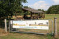
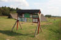
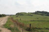
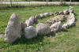
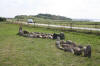
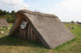
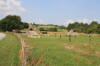
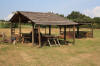

Sebbersund
Handelsplatz mit Friedhof und Stabkirche


32 - Sebbersund (Handelsplatz) - Letztes Update 24.08.2025
| Navi: 56.96856 9.55411 oder: St. Ajstrupvej 12D, 9240 Nibe |
Offizielle Webseite: https://vikingebyen.dk/ - Kontakt per e-Mail: info@vikingebyen.dk

Das ist ein Luftfoto vom 20.04.2023 von Skråfoto - Lizenz: CC BY 4.0 - das das neuzeitliche Areal "Vikingebyen i Sebbersund" zeigt. Skråfoto ist eine Webanwendung, die von Klimadatastyrelsen weltweit kostenlos bereitgestellt wird. Die Aufnahmen werden seit 2017 alle zwei Jahre erneuert und neben einer Senkrechtaufnahme wird ein Schrägbild aus jeder Himmelsrichtung angeboten, das man über eine Adresssuche aufrufen kann.
Bei den für die Aufnahmen verwendeten Kameras handelt es sich um Mappingkameras mit stabiler Geometrie. Durch die Entscheidung für den Einsatz von Kartierungskameras können die Bilder für Vermessungs- und Kartierungszwecke verwendet werden. Als Ergänzung zu den präzisen Kameras kam bei der Aufnahme der Bilder moderne Positions- und Orientierungshardware zum Einsatz, die mit GPS und Laser-Gyroskopen eine hochpräzise Ortung und Orientierung der Bilder ermöglicht. Dies bedeutet, dass Sie auf heutigen Bildern ohne Nachbearbeitung Objekte im Gelände in einer Entfernung von weniger als zwei Metern erkennen können. Insgesamt hat die dänische Klimadatenagentur aufgeteilt auf die ersten drei Jahre der Schrägluftfotos (2017, 2019 und 2021) mehr als 4.200.000 Rohbilder gesammelt, die mehr als 1,1 Milliarden JPG-Dateien zur Verteilung ergeben haben. Wer alle Bilder sehen möchte, muss 357 Jahre einplanen, hat dann aber für jedes Bild auch nur 10 Sekunden Zeit. - Das Jahr 2023 fehlt in der Berechnung schon, und in diesem Jahr 2025 folgen schon wieder neue Aufnahmen!
Südlich von Nibe schiebt sich eine Landspitze mit dem 31 m hohen Sct. Nikolaj Bjerg in das Fahrwasser zwischen der Nibe Bredning und der Halkær Bredning. Hier am Fuß des Berges lag zur Wikingerzeit der wichtigste Handelsplatz, bevor Ålborg zu Beginn des 10. Jahrhunderts angelegt wurde. Sebbersund heißt das schmale Fahrwasser vor der Landspitze. Es lag damals wie auch heute gut geschützt hinter eng gewundenen Fahrrinnen.
Das Ålborg Historiske Museum führt hier in den Jahren 1994 und 1995 umfassende Ausgrabungen während der Sommermonate durch.
Auf und in unmittelbarer Nähe der Landzunge war kein Platz vorhanden, um Landwirtschaft von Bedeutung zu treiben. Hier war der Handel, das Handwerk und die Fischerei Treibkraft der Besiedlung. Die Stadt wuchs nach damaligen Verhältnissen kräftig und deckte in seinen glücklichsten Tagen 10-12 Tønder Land (1 Tønde Land = 2 Morgen = 5500 qm = 0,55 Hektar). Dies entspricht einer Stadt von ca. 65000 Quadratmeter. Der Fund hat seine Entdeckung dem trockenen Sommer 1992 zu verdanken, als man vom Sct. Nikolaj Bjerg aus eine große Zahl von Flecken im Korn auf der Ebene unter dem Berg sehen konnte. Es waren die Spuren der halb in den Boden eingegrabenen kleinen Arbeits- und Wohnhäuser aus der Wikingerzeit. Es wurden insgesamt 150 dieser Grubenhausspuren auf dem Feld gezählt.
Der Handelsplatz, der nach den Funden zu urteilen um das Jahr 700 entstand, war in drei Bereiche geteilt: Wohnplatz mit den vielen Grubenhäusern im Norden, Handels- und Handwerkerbereich in der Mitte der Siedlung und schließlich Kirche und Friedhof im Süden.
Die Besiedlung
Grubenhäuser sind kleine Arbeits-/Wohnhäuser, für die man eine Grube aushob, deren Boden den Fußboden des Hauses ausmachte. Darüber legte man ein Satteldach.
Die meisten dieser Häuser sind rund und ca. 3 m im Durchmesser. Wurde ein Grubenhaus verlassen, gebrauchte man es als Abfallgrube. 1000 Jahre später kann man daher sehen, dass das Getreide hier aufgrund einer dickeren Humusschicht weitaus bessere Wachstumsbedingungen hat. Die Grundrisse der Häuser treten deutlich hervor. Die Ausgrabungen 1994 und 1995 zeigten, dass die wirkliche Anzahl beträchtlich höher liegt, als die zunächst gezählten 150 Grubenhausspuren.
Der Handwerkerbereich
Sebbersund war ein bedeutender Handelsplatz, wo Importwaren aus Norwegen und England gehandelt und für den Weitertransport in Gegenden am östlichen Limfjord umgeladen wurden.
Den zentralen Bereich der Besiedlung bildete der Handwerkerbereich mit zugehörigem Marktplatz. Hier fand man Gegenstände, die beweisen, dass Eisenschmiede, Bronzegießer, sowie Gold- und Silberschmiede hier Werkstätten hatten. Sicher hat es noch andere Handwerker am Ort gegeben, deren Waren an die Bewohner der Dörfer am Fjord abgesetzt wurden. Gemeinsam für alle war es, dass die Produkte in Verbindung mit den Werkstätten feilgeboten wurden. Das Rohmaterial für die bedeutende Eisenverarbeitung am Sebbersund stammt mit Sicherheit aus Norwegen.
Ob die Besiedlung ursprünglich als Markt angelegt wurde oder aber nach und nach entstand, ist eine Frage, die die weiteren Grabungen beantworten müssen. "Der Berg", von der ganzen Nibebucht zu sehen, war im östlichen Bereich des Limfjords wohl bei allen bekannt, - ein guter Platz, einander zu treffen. Verschiedene Handwerker besuchten den Marktplatz und ließen sich allmählich hier nieder. Der Platz entwickelte sich bald zu einer Stadt.
Kirche und Friedhof
Am südlichen Rand des Platzes lag die Holzkirche (Stabkirche), die um das Jahr 1000 erbaut worden sein muss, inmitten des Friedhofs.
Die Kirche war mit rechteckigem Kirchschiff und einem schmaleren Chor gen Osten angelegt. Die Gesamtlänge betrug 13 m und die Breite 4 bzw. 6 m. Die Konstruktion bestand aus in die Erde gegrabenen Pfosten, welche mit Querbalken (Riemen) verbunden wurden. Die so entstandenen Fächer wurden mit aufrechtstehenden Bohlen, den sogenannten Stäben, ausgefüllt.
Um die Kirche herum befand sich der Friedhof mit einer Fläche von ca. 40 x 40 m. Er war im flachen Gelände durch einen flachen Graben kenntlich gemacht worden. Der Friedhof besitzt schätzungsweise 1000 Gräber. Die Toten sind alle in ost-westlicher Richtung mit dem Kopf im Westen begraben worden. Die meisten hatten ein "Kissen" aus Grassoden unter dem Nacken. Dies bewirkte, dass der Kopf fast lotrecht zu liegen kam, so dass der Tote gen Osten und die Auferstehung (-Christi) blicken konnte. Frauen und Männer wurden getrennt beerdigt. Die Männer liegen südlich der Kirche, die Frauen nördlich.
Da es sich hier um christliche Gräber handelt, bekamen die Toten weder Grabbeigaben noch persönliche Dinge mit. Die Gräber sind daher schwer zu datieren. Es wurde nur eine halbe Münze in einem von ihnen gefunden, deren Alter und Herkunft unbekannt sind.
Nur knapp die Hälfte der Toten ist in Särgen begraben worden. Der Rest ist wohl in irgendein organisches Material eingehüllt gewesen (Stoff ?). Die Särge verraten, dass man Werkstoff benutzte, welchen man bei der Hand hatte oder leicht beschaffen konnte. Viele Särge sind aus Schiffsplanken gemacht. Dies verraten die Schiffsnieten in den Gräbern. Steven von kleineren Booten und "Eger" (Einbäume aus Eichenholz) wurden ebenfalls als Särge gebraucht. Als Kindersärge verwendete man teilweise Schlachter- und Teigtröge.
Nur ein Grab ist aus Stein gebaut. Seiten- und Decksteine bestehen aus hervorragend gespaltenem Granit, währenddessen im Westende ein großer Kalkblock, mit ausgemeißelter Nische für den Kopf der Leiche, platziert war. Der Sarg war mit Mörtel abgedichtet.
Darin lag das wohlbewahrte Skelett eines alten Mannes, kaum über 1,50 m groß. Der Kopf ruhte ursprünglich auf einem Kissen aus organischem Material - möglicherweise einem roten Seidenkissen. Untersuchungen ergaben, dass er sich nicht ausschließlich von Fisch ernährt hatte, wie das bei den anderen hier begrabenen Toten der Fall war. Er muss also ein Fremder gewesen sein, vermutlich aus Zentraleuropa.
Welcher Fremde kann eine so
vornehme Beerdigung verdient haben? Ein sehr hochstehender Geistlicher
vielleicht. Man weiß, dass
Erzbischof Unni von
Hamburg-Bremen
im Jahr
936 auf einer dienstlichen Reise in
Dänemark war, wo er u.a.
Vielleicht und vielleicht! Sicher ist jedoch, dass die Holzkirche oder die Kirchen mitten auf dem Friedhof - es wurden nämlich mindestens zwei an derselben Stelle gebaut - im späten 11. Jahrhundert von einer 20 m langen romanischen Steinkirche mit Schiff und Chor auf der Nordspitze des Sct. Nikolaj Bjerg abgelöst wurde. Sie war Sct. Nikolaj gewidmet, dem Schutzheiligen für Handel, Seefahrt und Fischerei. Obwohl diese Kirche erst 1880 endgültig abgerissen wurde, als man das Baumaterial für den Brückendamm am Sund benötigte, diente sie dem Christentum nicht lange, denn der große Handelsplatz stellte seine Arbeit zu Anfang des 12. Jahrhunderts ein, weil sowohl eine Naturgewalt als auch die Königsmacht ihm den Boden entzog. Zuerst legte König Harald Blauzahn als Folge seines Wunsches nach totaler Kontrolle des Limfjordshandels Ålborg an, das mit staatlichen Fördermitteln gestützt wurde, so dass es andere Städten nach und nach vom Markt drängte. Das zweite und Schlimmste war jedoch, dass die nördliche (Sløjkanalen) und westliche Limfjordseinfahrt (der Kanal durch die Aggertange) plötzlich durch kräftige Sandverschiebungen entlang der Nordsee verschlossen wurden, so dass die internationalen Handelswege nach Norwegen, England und Westeuropa mit einem Mal nicht mehr existierten.
Die meisten großen Handelsplätze der jüngeren Eisen- und Wikingerzeit, die sich zu Städten entwickelten, sind auch heute noch Städte. Dies bedeutet, dass sich die archäologischen Informationen über die früheste Stadtentwicklung normalerweise 3-4 m unter dem jetzigen Straßenniveau befinden. Außerdem sind sie durch spätere Aktivität gestört. Bei Sebbersund hat die Stadt die Zeit seit ca. 1100 unberührt überdauert.
Die Holzkirchen und der Friedhof sind bisher einmalig in Dänemark. Für die Archäologen ergab sich hier zum ersten Mal die Gelegenheit eine Stabkirche auszugraben, die nicht von einer späteren Steinkirche überbaut war.
Der Friedhof gab Gelegenheit, Studien zu treiben über Körpergröße, Lebensalter, Kindersterblichkeit, kleine und große Gebrechen und weit mehr bei einigen der ersten Christen in Dänemark. Der Friedhof ist somit eine Momentaufnahme der Dänen in der Periode von ca. 1000 - 1100 n. Chr.
Bei meinem letzten Besuch am Freitag, 23.August 2013 konnte ich diese Fotos aufnehmen (Vergrößerte Darstellung über Mausklick).
       


Wie der Homepage Vikingebyen i Sebbersund zu entnehmen ist, blieb die Zeit dort aber nicht stehen. Die örtliche Wikingergruppe, die hier 1999 mit einem Grubenhaus begann, hat weitere Gebäude erbaut, hält regelmäßig Treffen und einmal jährlich einen Wikingermarkt ab.
Bei meiner 2022er Jütland Wikinger Tour im Juni habe ich Sebbersund ausgelassen, da es dort nicht wirklich noch etwas aus der Wikingerzeit zu sehen gibt.
Literaturhinweise:
Sebbersund: isotopes and mobility in an 11th−12th c. AD Danish churchyard - T. Douglas Price, Jens N. Nielsen, Karin Margarita Frei, Niels Lynnerup - Journal of Archaeological Science - Volume 39, Issue 12, December 2012, Pages 3714-3720
Kirken på Skt. Nikolaj Bjerg - Nordjyske museerSebbersund - Webseite aus "Fredninger i Danmark"